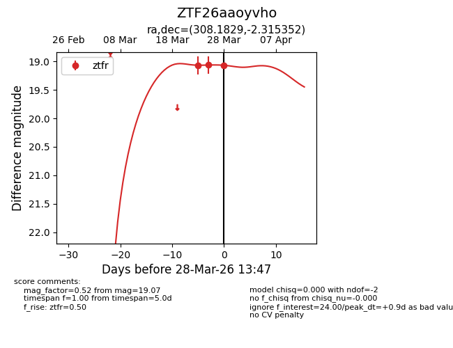
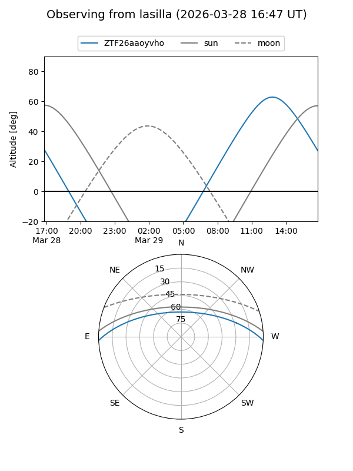
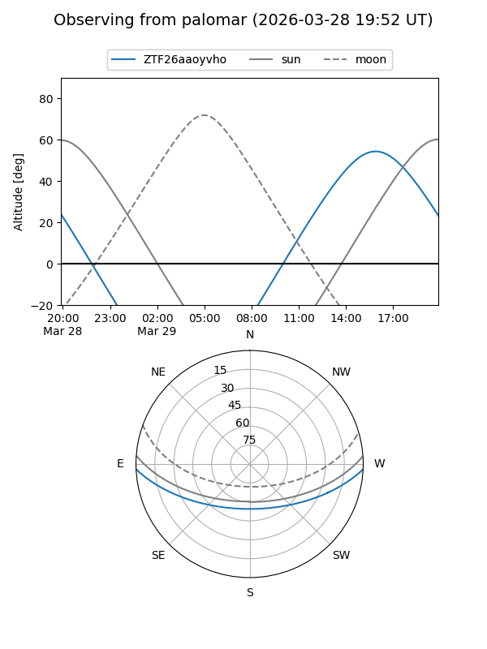
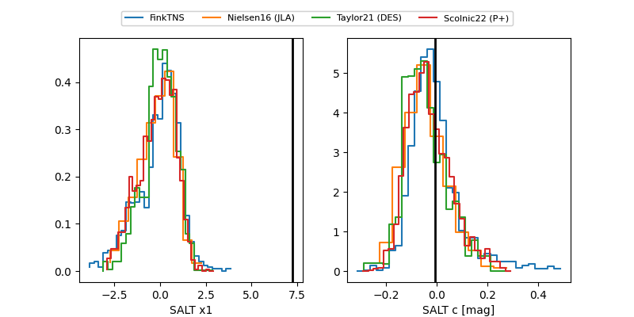

ZTF26aaoyvho
Target ZTF26aaoyvho at 2026-03-28 13:50
Aliases and brokers:
FINK: link
Lasair: link
ALeRCE: link
alt names
ZTF26aaoyvho (ztf,fink_ztf)
Coordinates:
equatorial (ra, dec) = 308.1829,-2.31535
equatorial (HMS+DMS) = 20:32:43.90,-02:18:55.27
galactic (l, b) = (42.9116,-23.50214)
Flags:
Photometry:
last ztfr=19.07
3 ztfr detections
Lightcurve

Visibility


Additional plots
